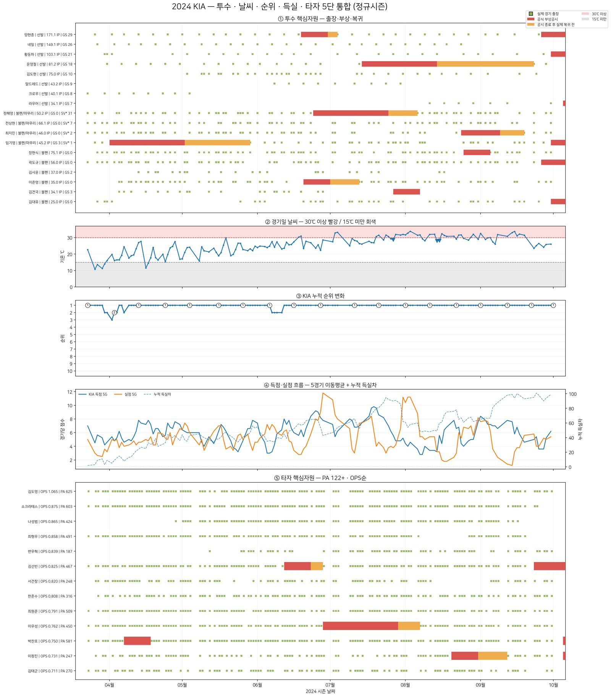
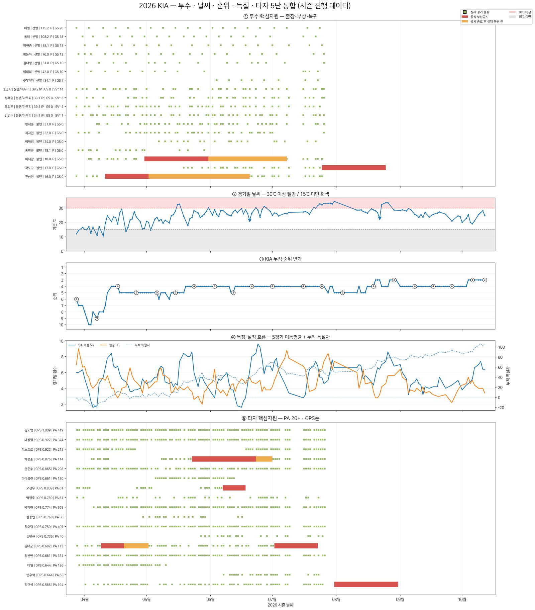

04 · 5-LAYER TIMELINE투수 · 날씨 · 순위 · 득실 · 타자를 한 시간축에
날씨와 핵심 선수의 부상(공시 → 복귀)이 순위 변화와 겹치는지 보려고, 다섯 개 데이터를 같은 날짜 축에 쌓았습니다. 빨간 막대는 공식 부상공시, 주황 막대는 공시 종료 후 실제 복귀 전 기간입니다.



가설
날씨와 핵심 선수의 부상이 KIA의 성적 변화에 영향을 미칠 것이다.
검증
2024~2026 경기일 날씨·부상공시·출장·득실·순위를 동일한 시간축으로 비교했다.
결과 · 해석
3개년에 공통으로 반복되는 패턴은 뚜렷하지 않았다. 성적은 득실 균형, 선수층의 대체 능력, 여러 선수의 동시 이탈 같은 복합 요인으로 봐야 한다.
가설이 맞지 않았다는 것도 결과입니다. 여기서 우리는 “팀이 왜 이겼나”에서 “선수는 실제로 어떻게 플레이하나”로 질문을 바꿨어요.